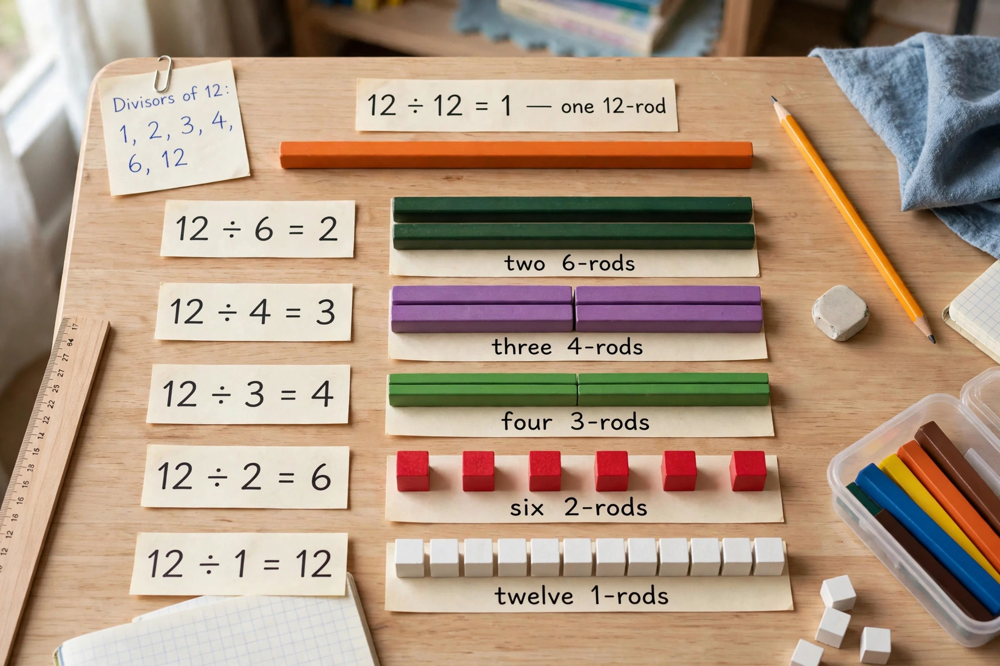

Highly composite number
| Highly composite number | |
|---|---|
 | |
| Introduced by | Srinivasa Ramanujan (1915) |
| First terms | 1, 2, 4, 6, 12, 24, 36, 48, 60, 120, ... |
| Field | Number theory |
A highly composite number is a positive integer that has more divisors than any smaller positive integer. The term was coined by Srinivasa Ramanujan, who studied these numbers extensively in a long 1915 paper in the Proceedings of the London Mathematical Society. Plato had already singled out 5040 as an ideal number of citizens for a city partly because of its many divisors, and highly composite numbers relate to the convenience of numbers like 12, 24, 60 and 360 in timekeeping and measurement.
Properties
If n = p1a1 · p2a2 ··· pkak is highly composite, then the primes pi are the first k primes and the exponents are non-increasing: a1 ≥ a2 ≥ ... ≥ ak. This follows because permuting exponents toward the smaller primes always reduces n without changing its number of divisors.
| n | factorisation | d(n) — number of divisors |
|---|---|---|
| 1 | — | 1 |
| 2 | 2 | 2 |
| 4 | 2² | 3 |
| 6 | 2·3 | 4 |
| 12 | 2²·3 | 6 |
| 24 | 2³·3 | 8 |
| 36 | 2²·3² | 9 |
| 48 | 2⁴·3 | 10 |
| 60 | 2²·3·5 | 12 |
| 120 | 2³·3·5 | 16 |
Related concepts
Ramanujan also studied superior highly composite numbers, which maximise d(n)/nε for some ε > 0. Colossally abundant numbers arise similarly in work connected with the Riemann hypothesis: Robin's criterion states that the hypothesis is true if and only if σ(n) < eγ n log log n for all n > 5040, where σ is the divisor-sum function.